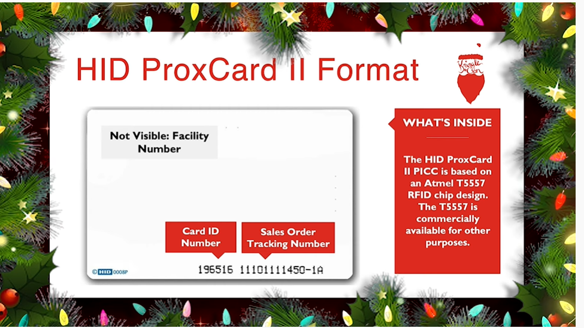

5) Open HID Lock
difficulty üéÑüéÑ
The Objective
Open the HID lock in the Workshop. Talk to Bushy Evergreen near the talk tracks for hints on this challenge. You may also visit Fitzy Shortstack in the kitchen for tips.
Chat with Bushy Evergreen
After helping Bushy Evergreen with the Speaker Door Open challenge in the Speaker UNprep Terminal the following conversation ensues.
That's it! What a great password...
Oh, this might be a good time to mention another lock in the castle.
Santa asked me to ask you to evaluate the security of our new HID lock.
If ever you find yourself in posession of a Proxmark3, click it in your badge to interact with it.
It's a slick device that can read others' badges!
The following dialogue is unlocked after we help Bushy Evergreen with the Speaker Lights On challenge in the Speaker UNprep Terminal
Wow - that worked? I mean, it worked! Hooray for opportunistic decryption, I guess!
Oh, did I mention that the Proxmark can simulate badges? Cool, huh?
There are lots of references online to help.
In fact, there's a talk going on right now!
The following dialogue is unlocked after we help Bushy Evergreen with the Speaker Vending Machine challenge in the Speaker UNprep Terminal
And that Proxmark thing? Some people scan other people's badges and try those codes at locked doors.
Other people scan one or two and just try to vary room numbers.
Do whatever works best for you!
Chat with Fitzy Shortstack
After helping Fitzy Shortstack with the 33.6 Kbps challenge the following conversation ensues.
ahem! We did it! Thank you!!
Anytime you feel like changing the color scheme up, just pick up the phone!
You know, Santa really seems to trust Shinny Upatree...
Hints Courtesy Bushy Evergreen
On solving the Speaker Door Open challenge we get the following hints
What's a Proxmark?
The Proxmark is a multi-function RFID device, capable of capturing and replaying RFID events.
Reading Badges with Proxmark
You can use a Proxmark to capture the facility code and ID value of HID ProxCard badge by running lf hid read when you are close enough to someone with a badge.
On solving the Speaker Lights On challenge we get the following hints
Impersonating Badges with Proxmark
You can also use a Proxmark to impersonate a badge to unlock a door, if the badge you impersonate has access.
lf hid sim -r 2006......
Short List of Essential Proxmark Commands
There's a short list of essential Proxmark commands also available.
Proxmark Talk
Larry Pesce knows a thing or two about HID attacks. He's the author of a course on wireless hacking!
Solution
Background
From all the hints we have gathered combined with Larry Pesce's amazing talk we understand that HID ProxCard is a popular system for door access control.
Every HID ProxCard badge has a facility code and card ID value.

These values are transmitted wirelessly first to the HID card reader and then via wire using the Weigand protocol to a controller which - based on some policies - decides whether access is to be granted.
The Proxmark is a multi-function RFID device, capable of capturing and replaying RFID events and we can use it to to capture the facility code and ID value of HID ProxCard badge by running lf hid read when we are close enough to someone with a badge.
We can replay the captured data to a card reader using the command lf hid sim -r <data> and we would be able to unlock the door if the badge we are impersonating has access.
Finding the Proxmark
Pick up the elevator 1.5 button found in the Speaker UNpreparedness room and visit floor one and a half.
Pick up the proxmark which can be found in the Wrapping Room (adjacent to the workshop).
Using the Proxmark for Impersonation
Now we need to read the badge of an elf who has access to the HID lock in the Workshop. In our chat with Fitzy Shortstack we learned that Santa really seems to trust Shinny Upatree.
To read Shinny's badge we stand close to him, open the proxmark CLI from our items and issue the lf hid read command.
██████╗ ███╗ ███╗█████╗
██╔══██╗████╗ ████║╚═══██╗
██████╔╝██╔████╔██║ ████╔╝
██╔═══╝ ██║╚██╔╝██║ ╚══██╗
██║ ██║ ╚═╝ ██║█████╔╝ Iceman ☕
╚═╝ ╚═╝ ╚═╝╚════╝ ❄️ bleeding edge
https://github.com/rfidresearchgroup/proxmark3/
[=] Session log /home/elf/.proxmark3/logs/log_20210109.txt
[=] Creating initial preferences file
[=] Saving preferences...
[+] saved to json file /home/elf/.proxmark3/preferences.json
[ Proxmark3 RFID instrument ]
[ CLIENT ]
client: RRG/Iceman/master/v4.9237-2066-g3de856045 2020-11-25 16:29:31
compiled with GCC 7.5.0 OS:Linux ARCH:x86_64
[ PROXMARK3 ]
firmware.................. PM3RDV4
external flash............ present
smartcard reader.......... present
FPC USART for BT add-on... absent
[ ARM ]
LF image built for 2s30vq100 on 2020-07-08 at 23: 8: 7
HF image built for 2s30vq100 on 2020-07-08 at 23: 8:19
HF FeliCa image built for 2s30vq100 on 2020-07-08 at 23: 8:30
[ Hardware ]
--= uC: AT91SAM7S512 Rev B
--= Embedded Processor: ARM7TDMI
--= Nonvolatile Program Memory Size: 512K bytes, Used: 304719 bytes (58%) Free: 219569
bytes (42%)
--= Second Nonvolatile Program Memory Size: None
--= Internal SRAM Size: 64K bytes
--= Architecture Identifier: AT91SAM7Sxx Series
--= Nonvolatile Program Memory Type: Embedded Flash Memory
[magicdust] pm3 --> lf hid read
#db# TAG ID: 2006e22f13 (6025) - Format Len: 26 bit - FC: 113 - Card: 6025
We detect that Shinny's badge has a facility code= 113, a card ID= 6025 and TAG ID=2006e22f13. Now head back over to the HID card reader in the Workshop and issue the command lf hid sim -r 2006e22f13 while standing close to the reader. Once the simulation stops after 10 seconds close the terminal.
██████╗ ███╗ ███╗█████╗
██╔══██╗████╗ ████║╚═══██╗
██████╔╝██╔████╔██║ ████╔╝
██╔═══╝ ██║╚██╔╝██║ ╚══██╗
██║ ██║ ╚═╝ ██║█████╔╝ Iceman ☕
╚═╝ ╚═╝ ╚═╝╚════╝ ❄️ bleeding edge
https://github.com/rfidresearchgroup/proxmark3/
[=] Session log /home/elf/.proxmark3/logs/log_20210109.txt
[=] Creating initial preferences file
[=] Saving preferences...
[+] saved to json file /home/elf/.proxmark3/preferences.json
[ Proxmark3 RFID instrument ]
[ CLIENT ]
client: RRG/Iceman/master/v4.9237-2066-g3de856045 2020-11-25 16:29:31
compiled with GCC 7.5.0 OS:Linux ARCH:x86_64
[ PROXMARK3 ]
firmware.................. PM3RDV4
external flash............ present
smartcard reader.......... present
FPC USART for BT add-on... absent
[ ARM ]
LF image built for 2s30vq100 on 2020-07-08 at 23: 8: 7
HF image built for 2s30vq100 on 2020-07-08 at 23: 8:19
HF FeliCa image built for 2s30vq100 on 2020-07-08 at 23: 8:30
[ Hardware ]
--= uC: AT91SAM7S512 Rev B
--= Embedded Processor: ARM7TDMI
--= Nonvolatile Program Memory Size: 512K bytes, Used: 304719 bytes (58%) Free: 219569 bytes (4
2%)
--= Second Nonvolatile Program Memory Size: None
--= Internal SRAM Size: 64K bytes
--= Architecture Identifier: AT91SAM7Sxx Series
--= Nonvolatile Program Memory Type: Embedded Flash Memory
[magicdust] pm3 --> lf hid sim -r 2006e22f13
[=] Simulating HID tag using raw 2006e22f13
[=] Stopping simulation after 10 seconds.
[=] Done
Rejoice
We successfully opened the HID lock!
Answer
Objective is automatically completed when we unlock the door
There's more...
Walk through the unlocked door. On emerging through the portrait at the other end...
ü•Åü•Åü•Å
...
...
we have magically transformed into Santa! We also unlock 7 more objectives.
TIP: We can transform back into ourselves by walking back through the portrait we emerged from